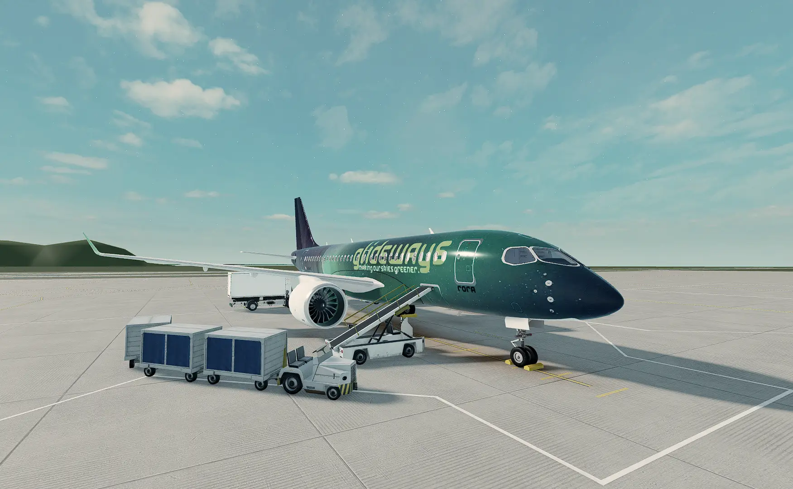
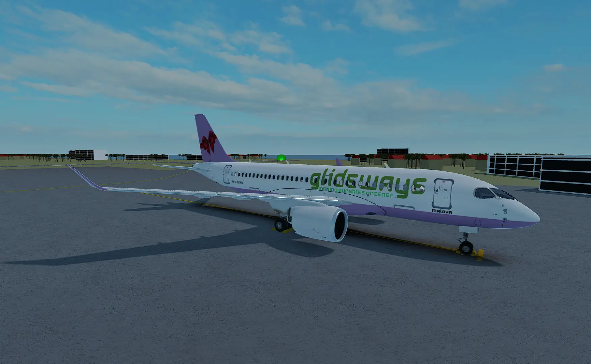
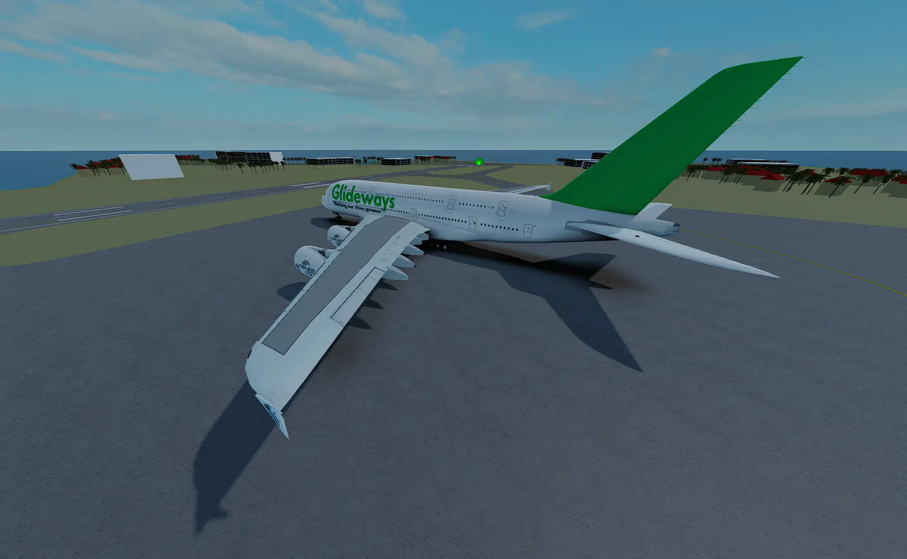
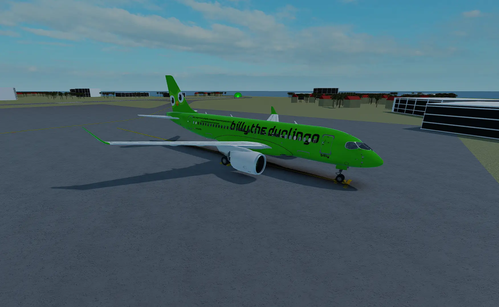
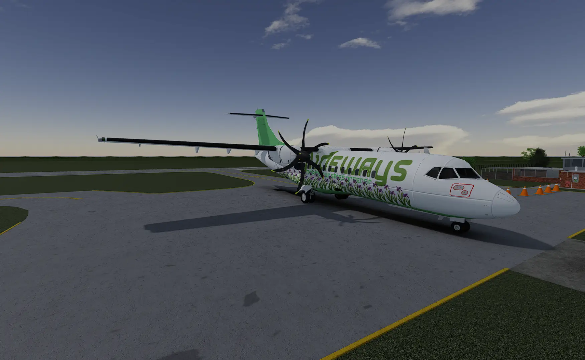
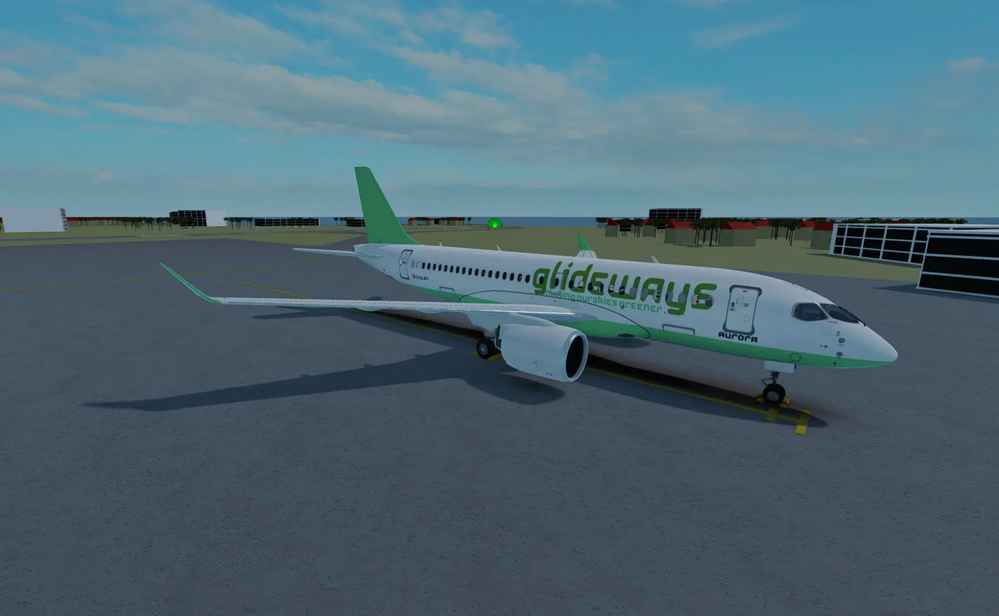

Our Fleet
Rora
Rora, is Dalaman's special aircraft. Rora only operates flight to and from LTBS with love and care.

Malava
Malava is named after our only diva, female, corpeate member. Just like Malava, this plane is pretty and a diva.

Airbus A380
The A380 is a modern double-decker airline jet designed for efficiency and passenger comfort, accommodating up to 800 passengers.

Bombardier CRJ900
The Bombardier CRJ900 is a regional jet offering a balance of performance and economy, ideal for short-haul routes.

ATR 72-600
The ATR 72-600 is a turboprop aircraft known for its versatility and efficiency, perfect for regional and short-distance flights.

Boeing 737-800
The Boeing 737-800 is a short- to medium-range twinjet with seating for 160 passengers. It's known for its reliability and fuel efficiency.
